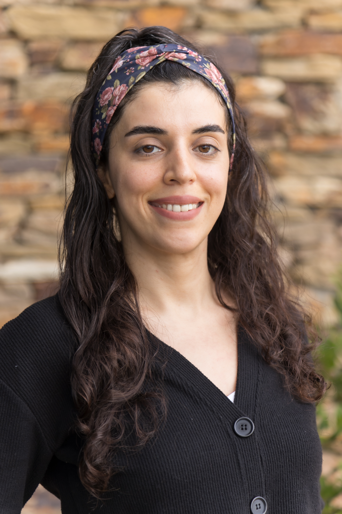

About Me
Life is a constant process of learning. I imagine people in an endless library; each having their book basket, collecting books and experiences.
I am a M.Sc student, research and teaching assistant in the Department of Industrial Engineering at Boğaziçi University, Istanbul, Turkey. Currently preparing to begin my PhD at the University of Melbourne.
Research Interests
- Causality Estimation from Data
- Systems Theory
- Dynamic Health Systems
- Epigenetics
- System Dynamics